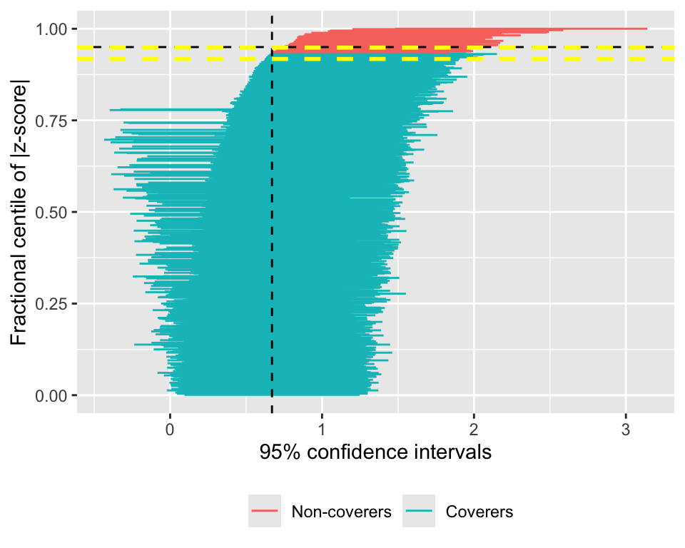
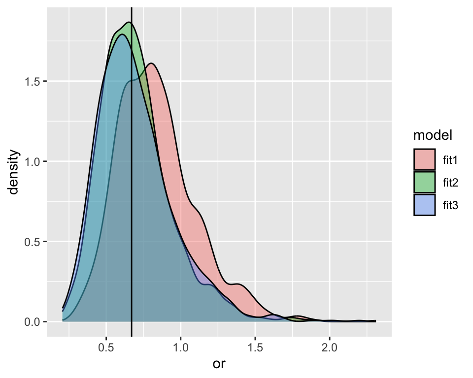
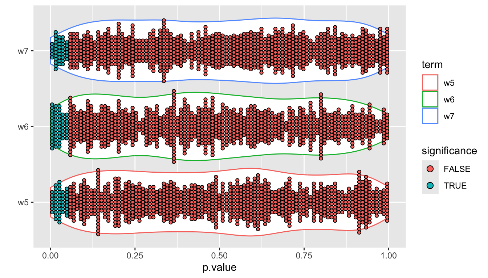
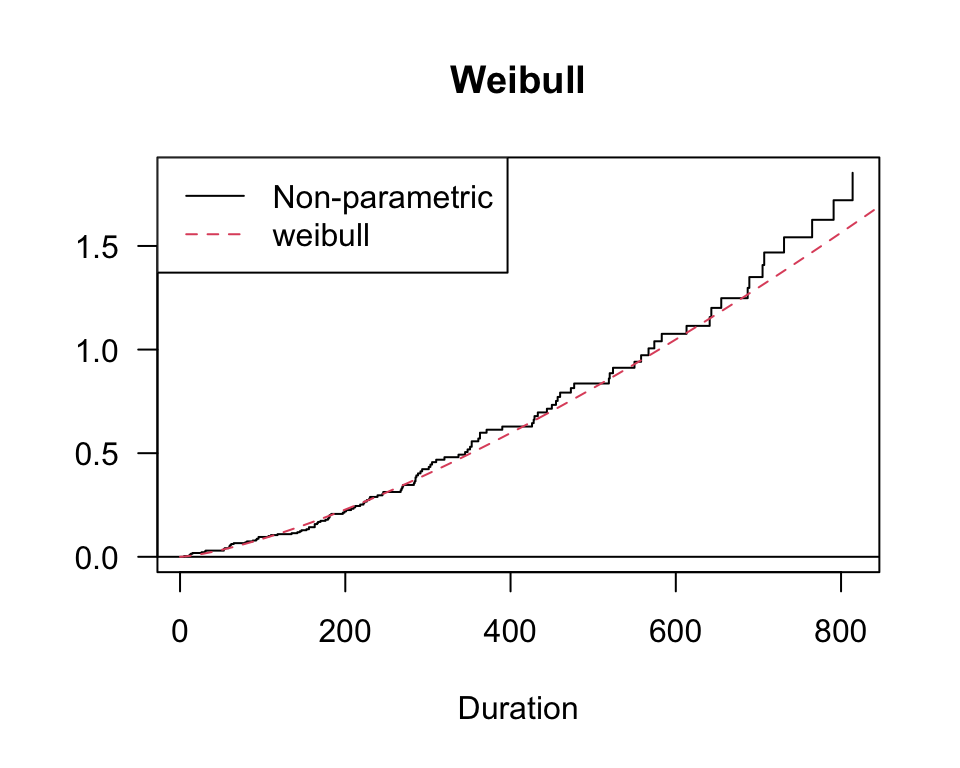
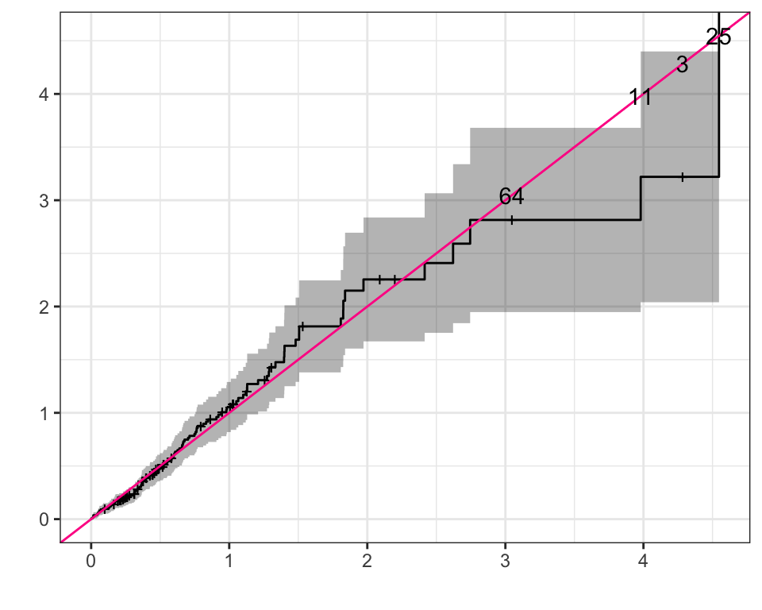

We employ the formula of sample size calculation proposed by Schouten [1] for two means, unequal variances and sample size – independent samples as follows
where \(\tau = \sigma^2_2/\sigma^2_1\) and \(\gamma = n_2/n_1\). Thus
\[
Z_{1-\beta} \le \sqrt{\bigg(n - \frac{(\tau^2+ \gamma^3)Z_{1-\alpha/2}^2}{2\gamma(\tau+\gamma)^2}\bigg)\frac{\gamma(\mu_2 - \mu_1)^2}{(\tau+\gamma)\sigma_2^2}} - Z_{1-\alpha/2}
\] The power is then calculated using the CDF of the standard normal distribution \(\Phi(Z)\). For the sake of simplicity, we assume \(\tau = \gamma = 1\), but the general cases (\(\tau,\gamma \ne 1\)) can also be implemented with ease based on the above formula. With the total sample size (both arms) of 100, 500 and 1000, we have:
This result obtained using simulations does not differ from the previous result considerably.
Suppose that we expect the Monte Carlo SE of power is \(0.5\%\), corresponding number of iterations \(n_{sim}\) can then be specify using the formula
\[
n_{sim} = \frac{\widehat{\text{Power}} \times (1-\widehat{\text{Power}})}{\text{Monte Carlo SE(Power)}^2},
\] we now calculate \(n_{sim}\) using the powers obtained above associated with \(4\) sample size per arm (50, 250, 500, 790).
Thus, to keep the required Monte Carlo SE of \(0.5\%\) (for all 4 cases), we need at least \(n_{sim} =\) 9531. We choose \(n_{sim} = 10000\) and, thus, the corresponding Monte Carlo SE are
se =sqrt(power*(100-power)/10000); round(se,3)
50 250 500 790
0.306 0.478 0.488 0.398
which are lower than \(0.5\)
Question 3
sapply(n2, SimPower, R =10000, sigma =sqrt(100))
50 250 500 790
8.00 19.52 34.29 50.79
As we increase the SD, the powers reduce given that we do not change the sample sizes.
Simulations - Confounding
Question 2
Based on the the section of data generation, we have 10 covariates involving:
The first case is the correlation between 2 binary variables while the second is the correlation between a binary and a continuous variables. There is no correlation condition on any two continuous variables.
In lieu of following the procedure described in the paper, which requires two steps of generation, we can simulate the continuous covariates directly based on the multinormal distribution.
For the correlation of two binary variables, we can improve the attenuation caused by dichotimising (which was not mentioned in the paper). To this end, We use the method proposed by Emrich et. al. [2], i.e. we pre-specify the correlation \(\rho_{prior}\) of two pre-dichotomised variables such that the correlation \(\rho_{post}\) of two corresponding post-dichotomised variables reaches the target value of correlation.
For the correlation of a binary and a continuous variables, we can also improve the attenuation using the probit function input of which is continuous variable and the pre-specified slope. The corresponding binary variable is calculated using the inverse CDF of bernoulli distribution. This approach allows adjusting the correlation based also on the slope.
n =2000# create the covariance matrixcovmat =diag(1, 10)pre_rho = simstudy:::findRhoBin(0.5,0.5, 0.2) # find the pre rhocovmat[1,5]<- covmat[5,1]<- pre_rho # update corrcovmat[3,8]<- covmat[8,3]<- pre_rho # update corr# pre_rho = simstudy:::findRhoBin(0.5,0.5, 0.9)covmat[2,6]<- covmat[6,2]<-0.9# update corrcovmat[4,9]<- covmat[9,4]<-0.9# update corrset.seed(11)df<- MASS::mvrnorm(n, mu =rep(0,10), Sigma = covmat)# a = ifelse(df[,4] < mean(df[,4]),1,0)# b = ifelse(df[,9] < mean(df[,9]),1,0)# cor(a,b)# dichotomise variables df[,c(1,3,5,8)]<-ifelse(df[,c(1,3,5,8)] <qnorm(0.5),1,0)# check the correlation of two binary variables. df[,c(1,5)]|>cor(); df[,c(3,8)]|>cor()
The above results show that the correlation of \((W_1, W_5)\) and \((W_3,W_8)\) are close to the target value, which is \(0.2\). We now improve the correlation between binary and continuous variables by adjusting the slope and intercept ( actually the slope only).
# improve correlation of bin-con variables using the probit function. beta1 =2; beta0 =0.001p6 =pnorm(beta1*df[,2]+beta0)p9 =pnorm(beta1*df[,4]+ beta0)# dichotomise variabledf[,6]<-qbinom(p6, 1, 0.5) df[,9]<-qbinom(p9, 1, 0.5)# check the correlation of binary & continuous.df[,c(2,6)]|>cor();df[,c(4,9)]|>cor()
The best result of correlation that can be achieved using this method is close to \(0.8\). Although this goes off the target value of \(0.9\), it is the best we can achieve.
We now repeat the procedure above to simulate 1000 datasets:
R =1000dat =replicate(R,{ df<- MASS::mvrnorm(n, mu =rep(0,10), Sigma = covmat)# dichotomise variables df[,c(1,3,5,8)]<-ifelse(df[,c(1,3,5,8)] <qnorm(0.5),1,0)# improve correlation of bin-con variables using the probit function. beta1 =2; beta0 =0.1 p6 =pnorm(beta1*df[,2]+beta0) p9 =pnorm(beta1*df[,4]+ beta0)# dichotomise variable df[,6]<-qbinom(p6, 1, 0.5) df[,9]<-qbinom(p9, 1, 0.5)return(df)})
We now simulate the exposure and outcome for each dataset
bet =c(0.8, -0.25, 0.6, -0.4, -0.8, -0.5, 0.7)alpha =c(-3.85, 0.3, -0.36, -0.73, -0.2, 0.71, -0.19, 0.26, -0.4)set.seed(11)dat2<-apply(dat,3, \(df){# simulates the exposure and outcome variables for each # simulated dataset. Its input is matrix of covariate W1-W10 prob = boot::inv.logit(df[,1:7]%*%bet) # calculate the probability using the inverse logit function A =ifelse(prob >runif(n),1, 0) # dichotomise exposure df1<-cbind(df,A) prob = boot::inv.logit(cbind(1,df1[,c(1:4,8:11)])%*%alpha) # calculate the probability using the inverse logit function. It is important to note that I used the formula exp(x)/1[+exp(x)], not 1/[1+exp(x)]. This wouldn't change the result as you defined the < or > to dichotomise. To check which one is correct, we will calculate the probability of A and Y, if they are =~ 0.05 ans 0.02, then we are fine. Y =ifelse(prob >runif(n),1, 0) # dichotomise outcome df3<-cbind(df1, Y)colnames(df3) <-c(paste0("w",1:10), "A", "Y") # set names of columns# glm(df3[,"Y"] ~ df3[,"A"], family = "binomial")$coefficients[2]as_tibble(df3)|>mutate_at(c(1,3,5,6,8,9,11,12), as_factor) }, simplify = F)
We now check the average probability of A and Y and correlations of covariates
# probsapply(dat2, \(i) c(A =mean(i$A==1), Y =mean(i$Y==1)))|>apply(1,mean)
dats =tibble(dat = dat2)|># shrink all simulated datasets to tibble (data.frame)# fit the logistic model for each datasetmutate(fit =map(dat, ~glm(Y ~ A, data = ., family ="binomial")))|># summary the output of glmmutate(summ =map(fit, purrr::compose(~slice(.,2),broom::tidy)))|>unnest(summ)|># calculate OR from logORmutate(or =exp(estimate))|># select main statistics, i.e. or and SD dplyr::select(or, std.error)|># add dataset numbermutate(ds =1:R, .before =1)glimpse(dats)
To assess the uncertainty of simulations, we utilise the R package rsimsum[3] to summarise the results and report the result based on the suggestions of Morris et. al. [4].
(s1 <-simsum(data = dats, estvarname ="or", se ="std.error", true =exp(-0.4), x =TRUE)|>summary())
Values are:
Point Estimate (Monte Carlo Standard Error)
Non-missing point estimates/standard errors:
Estimate
1000
Average point estimate:
Estimate
0.8402
Median point estimate:
Estimate
0.8080
Average variance:
Estimate
0.0962
Median variance:
Estimate
0.0937
Bias in point estimate:
Estimate
0.1699 (0.0084)
Relative bias in point estimate:
Estimate
0.2535 (0.0126)
Empirical standard error:
Estimate
0.2666 (0.0060)
Mean squared error:
Estimate
0.0999 (0.0061)
Model-based standard error:
Estimate
0.3102 (0.0008)
Relative % error in standard error:
Estimate
16.3330 (2.6205)
Coverage of nominal 95% confidence interval:
Estimate
0.9330 (0.0079)
Bias-eliminated coverage of nominal 95% confidence interval:
Estimate
0.9730 (0.0051)
Power of 5% level test:
Estimate
0.8150 (0.0123)
# summarise the output. focus on the Bias and coverages1$summ|>mutate_if(is.numeric, ~round(.,3))|>filter(stat %in%c("bias","cover"))|>kbl( format ="latex", booktabs = T)|>kable_styling(latex_options =c("striped","hold_position"))
The bias of \(0.17\) and the coverage of \(0.93\) with the Monte Carlo SE of \(0.008\) indicate a good consistency of the estimate of OR across simulations. We can also create the zip-plot for illustration ad follows:
autoplot(s1, type ="zip")

question 4
Suppose the model that gives the crude OR is model 1, the model that excludes \(W_5-W_7\) is model 2, and the model that includes all covariates is model 3. We fit all models and obtain the average ORs and credible intervals.
We plot the density curve of OR of three models as follows:
ggplot(dat_join, aes(x = or, fill = model))+geom_density(alpha = .4)+geom_vline(xintercept =exp(-0.4))

We then evaluate uncertainty of the models using the bias and coverage measures that are suggested by Morris et. al. [4].
s2 <-simsum(data = dat_join, estvarname ="or", se ="sd", true =exp(-0.4), x =TRUE, methodvar ="model")out<-summary(s2)out$summ|>mutate_if(is.numeric, ~round(.,3))|>as_tibble()|>filter(stat %in%c("bias","cover"))|>kbl( format ="latex", booktabs = T)|>kable_styling(latex_options =c("striped", "hold_position") )
\(W_5-W_7\) do not impact the estimation significantly. This is indicated by the average OR and its corresponding credible intervals shown above. These values do not go off markedly. This can also be implied by the estimate of bias and cover in the table above; both bias and cover are almost the same between two models. Another implication of this is to compare the overlap area between model 2 and model 3 versus model 1 and model 3, the former is large than the later.
This suggests us to explore the estimate of coefficients of these covariates and their p-value to see if they are significant. To this end, we extract information from the fitting object of model 3 and calculate the probability of significance, i.e. the probability that these three corresponding coefficients differ from \(0\). In other words, this is the probability of rejecting the null hypothesis in the Bayesian framework.
ggplot(sig.dat, aes(y = p.value, x = term))+geom_violin(aes(color = term))+geom_dotplot(binaxis='y', stackdir='center', dotsize=1, binwidth =1/100, binpositions ="all", aes( fill = significance))+coord_flip()+labs(x ="")

Thus, the probability of significance calculated across 1000 simulated datasets are about \(5\%\).
Survival Data - Analyses
Question 1 & 2
The survivor function under the Weibull distribution has the following form
\[
S(t) = \exp\{-(\lambda t)^{\alpha}\}.
\] If we use the scale parameter \(\sigma = 1/\alpha\) and \(\mu = -\ln\lambda\), we have
\[
S_{W}(t) = \exp\{-e^{-\mu/\sigma}t^{1/\sigma}\}.
\] If we set \(\sigma =1\) we have the survivor exponential function, i.e.
\[
S_E(t) = \exp\{-\lambda t\}.
\]
If we take \(\ln[-\ln(.)]\) and \(\ln(.)\) to \(S_W(t)\) and \(S_E(t)\), respectively, we obtain \[
\ln\{-\ln[S_W(t)]\} = -\mu/\sigma + 1/\sigma\ln(t), \quad \text{and}\quad \ln[S_E(t)] = -\lambda t.
\]
These functions suggest a diagnostic tool to evaluate how well a set of survival data follows a Weibull or Exponential distribution.
Only two covariates are statistically significant in all three models while the main effect, i.e. ph.karnol, is not. This may implies two points:
All three models may be equivalent.
Not all covariates are helpful.
However, the diagnostic plots above show the Weibull is preferred for this data.
Thus, we undertake model selection to drop covariates that do not impact the models. Because ph.karnol is the main effect, we will keep it while proceeding the step forward/backward.
The updated Weibull and Cox models now have 4 covariates, ph.karno1, sex2, ph.ecog, wt.loss while the exponential model has 3 covariates, ph.karno1, sex2, ph.ecog. We will make a comparison now.
The main effects in three model are similar. The effect in Weibull model is the highest, followed by that in Cox and then Exponential (the effects of Cox and exponential are very much the same). All three are higher than 1, implying the effect of ph.karno. However, the effect is not statistically significant.
Question 3
We check the distribution of Weibull and Cox model:
check.dist(wei.mod2, cox.mod2)

We see that Weibull model fits well to the Cox model. Thus, we only evaluate the goodness of fit of Weibull. We calculate the Cox-Snell residuals and plot it against the cumulative hazard function.
wm<-flexsurvreg(Surv(time, status) ~ ph.karno + sex+ ph.ecog + wt.loss , data = dat, dist ="weibull")cs<-coxsnell_flexsurvreg(wm)surv <-survfit(Surv(cs$est, cs$status) ~1)index =which(cs$est>=3)val = cs$est[cs$est>=3]autoplot(surv, fun ="cumhaz")+geom_abline(intercept =0, slope =1, color ="deeppink")+theme_bw()+labs(x =" ", y =" ")+annotate("text", x=val, y=val, label= index)

The model fit the data quite well. However, there are some outliers whose indices are shown in the plot.
References
1.
Schouten HJ. Sample size formula with a continuous outcome for unequal group sizes and unequal variances. Statistics in Medicine. 1999;18(1):87–91.
2.
Emrich LJ, Piedmonte MR. A method for generating high-dimensional multivariate binary variates. The American Statistician. 1991;45(4):302–4.
3.
Gasparini A. Rsimsum: Summarise results from monte carlo simulation studies. Journal of Open Source Software. 2018;3(26):739.
4.
Morris TP, White IR, Crowther MJ. Using simulation studies to evaluate statistical methods. Statistics in medicine. 2019;38(11):2074–102.